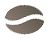

Комплимент от De’Longhi для истинных кофеманов
10 кг отборной 100% Арабики для приготовления
любимых напитков на любой вкус каждый день
Кофе - это любовь на всю жизнь.
Побалуйте себя чашечкой превосходной арабики
Арабика – это одна из ботанических разновидностей кофейного дерева. Ее официальное «имя» звучит лаконично: Coffea Arabica или Арабика Аравийская.
Свойства кофе привлекли внимание арабских торговцев, и они решили познакомить свою родину с этим растением.
Между эфиопским городом-рынком Хараром и Аравийским полуостровом существовали активные торговые связи. Именно оттуда кофе попал в Йемен, а оттуда в арабский мир.
В то время кофейное дерево еще не называли арабикой, это название ботаники дали растению гораздо позже, и не совсем верно. Они посчитали, что дерево – исконный житель Аравии, отсюда и название. Только потом выяснилось, что прародиной растения является Африка, но переделывать уже ничего не стали.
Наслаждайтесь вашей идеальной чашкой кофе
Безупречный эспрессо
Превосходные напитки с добавлением молока
Одним прикосновением к дисплею
Степени обжарки
Светлая
Легкая насыщенность вкуса. Ярко-выраженная кислинка.
Средняя
Легкие сладко-горькие нотки во вкусе. Легкая кислинка, более насыщенный вкус.
Средне-темная
Более выраженные сладко-горькие нотки во вкусе. Еще более легкая кислинка и более насыщенный вкус.
Темная
Выраженный сладко-горький вкус, минимальная кислинка.
Очень темная
Резкий сладко-горький вкус, отсутствие кислинки.
4 простых шага до вашей кофемашины
Выберите кофемашину
Добавьте в
корзинуОплатите
заказКурьер
доставит кофемашину
и ваш подарок
Краткие правила акции:
1. Акция действует в официальном интернет-магазине De'Longhi.ru
2. Срок действия акции — с 01 ноября 2018 по 10 января 2019
3. Организатор акции и продавец: ООО «ФИРМЕННЫЕ РЕШЕНИЯ»,
198216 Санкт-Петербург Ленинский проспект дом 139 литера А помещение 414